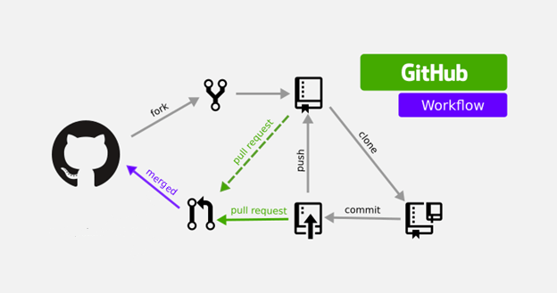
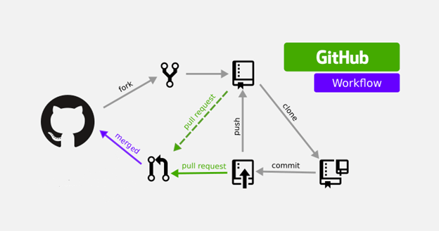

GIT & GITHUB
In the development world, managing code and collaboration play a major role in the success of projects. Two of the most widely used tools in this area are Git and GitHub. When used together, they become essential for organizing the development process, maintaining version control, and offering teams a seamless collaboration environment.
When used together, Git and GitHub turn code management from a necessity into an art form. Git lays the foundation of the project, while GitHub opens the door to collaboration and innovation. This duo provides ideal solutions for projects of all scales, from individual developers to large team efforts.
 

Git: The Heart of Version Control
Git is a powerful version control system that allows developers to track, manage, and monitor different versions of their code. One of Git's greatest advantages is its ability to track changes over time and revert projects to a previous version if necessary. This makes mistakes in code or accidentally deleted files a manageable issue.
Git is a safety net that preserves the history of code, while GitHub is the bridge that builds the future by sharing that history. Together, they strengthen collaboration and progress with every line of code.
GitHub: The Platform That Unites Developers
While Git handles local version control, GitHub brings the code to the cloud, facilitating collaboration between developers. GitHub offers developers a platform to share their projects with the world, while also making collaboration easier. Features like pull requests, issues, and forks contribute to the growth and success of open-source projects.